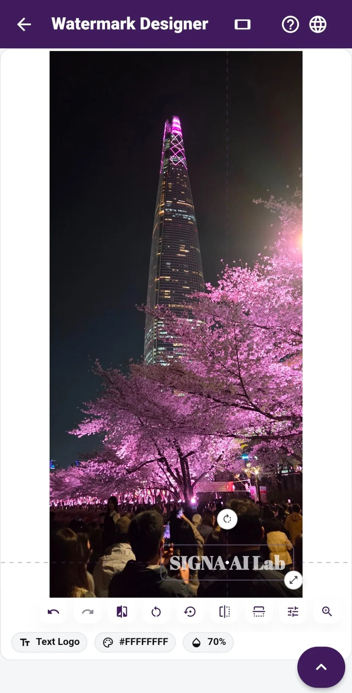

01 · WATERMARK · Free watermarking, no usage cap
Watermark a whole batch
Add your name in a built-in font or bring your own logo. Make a logo from your initials, turn a photo of your handwriting into a watermark, or sign directly on the screen. Choose the font, color, and opacity for text, and fine-tune placement and size for each photo, then save the design to use again. You can switch on the invisible SIGNA signal when you want both marks.
Apply a watermark to up to 12 photos at once. Get a suggested position for each photo, adjust it yourself, or undo the suggestion.
Portrait and landscape · Up to 12 photos · Placement per photo · Saved designs · Extra fonts with Pro
 See the full app screen ↗
See the full app screen ↗

